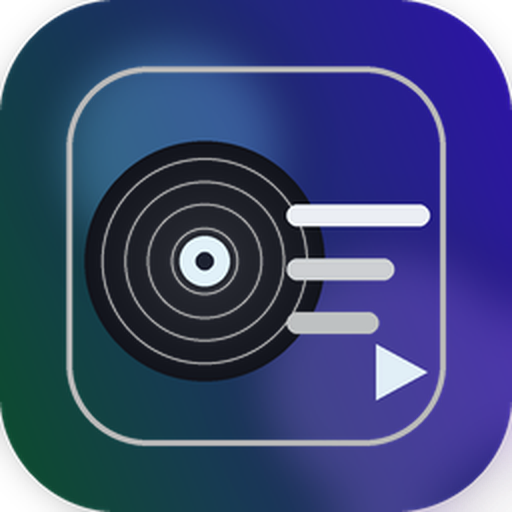

Windows x64
推荐 Windows 10 / 11 x64 用户下载。默认构建文件名：
Elplayer-5.3.4-Setup-x64.exe
如果链接暂时 404，请联系作者邮箱或者Github。

Elplayer v5.3.4支持本地音频、本地视频、LRC 歌词、SRT/VTT 字幕、桌面歌词浮窗和极简黑胶机模式。如有任何下载问题，请联系作者mxyppsuc@foxmail.com
推荐 Windows 10 / 11 x64 用户下载。默认构建文件名：
Elplayer-5.3.4-Setup-x64.exe
如果链接暂时 404，请联系作者邮箱或者Github。
根据设备选择 Apple Silicon 或 Intel 版本。公开发布建议使用已签名和公证版本。
查看 macOS 下载不安装桌面版时，也可以直接使用更加方便洁净的Web 版。
打开 Web 版